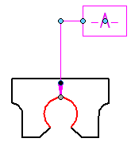
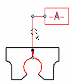
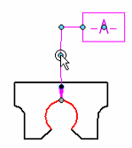

Insert a vertex in a leader
-
Select a leader to display its handles.

-
Position the cursor over the leader where you want to insert a vertex.

-
Hold the Alt key and click.

-
Drag the inserted edit handle to position the new vertex. You can snap to one of the dashed orientation lines, which are displayed at either end of the line segment when you begin to drag the handle.

Tip:
You cannot insert a vertex on the break line segment of a leader.
How do I
Change an annotation terminatorAdd a leader
Delete a vertex from a leader
Learn more
Working with leadersLook up more details
Leader commandLeader command bar
Leader Properties dialog box